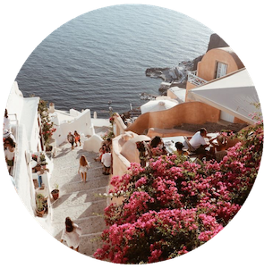

GALARIES
HOBBIES
ME
HOME
Hobbies enrich your life
Travel
Never let your memories be greater than your dreams
I love exploring places I've never visited

Wine
" Wine makes daily life easy, less hurried, with fewer tension and more tolerance " -Ben Franklin
Wine has been around for centries. It's a complex drink that can take years to perfect. There is history and science inside every bottle.
Wine restaurant reccomendations:
nomuno
nomuno
stocks more than 100 different kinds of wine from all over the world.
Cuisine
"Food for us comes from our relatives. Food has a culture. It has a history. It has a story. It has relationships. " -Winona Laduke
Spanish restaurant recommendations:
Lubina